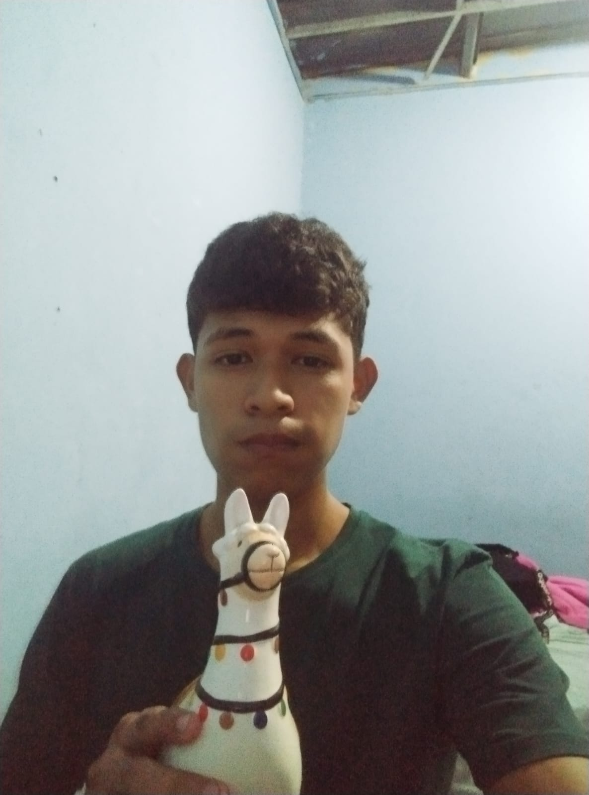
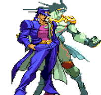

Sobre mi
Mi nombre es Abraham Alcedo, estudiante de la lincenciatura en Desarrollo y Gestion de Software en la Universidad Tecnológica de Panamá. Me apasiona la programación, el diseño y el mundo de los videojuegos. Este sitio fue creado con el objetivo de compartir conocimiento sobre cómo se desarrolla un videojuego desde cero, combinando creatividad, lógica y arte. Creo firmemente que cada línea de código puede dar vida a una idea, y que aprender a crear juegos es una forma divertida de entender la tecnología y expresar nuestra imaginación.

